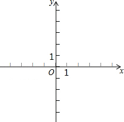

2015年北京市中考数学试题 · 数学解答题 第27题27．（7分）（2015•北京）在平面直角坐标系xOy中，过点（0，2）且平行于x轴的直线，与直线y=x﹣1交于点A，点A关于直线x=1的对称点为B，抛物线C1：y=x2+bx+c经过点A，B．（1）求点A，B的坐标；（2）求抛物线C1的表达式及顶点坐标；（3）若抛物线C2：y=ax2（a≠0）与线段AB恰有一个公共点，结合函数的图象，求a的取值范围．